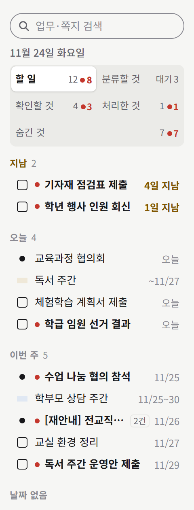

GOE 메신저용
GOE 메신저용할 일 목록
깜빡한 마감은
목록 맨 위에
새 쪽지를 한 시간마다 가져와 오늘 할 일과 이번 주 할 일을 나눠 보여 줘요. 이미 기한이 지난 일은 완료할 때까지 맨 위에 남아요.
 메신저 캘린더
브리티 메신저 캘린더
메신저 캘린더
브리티 메신저 캘린더
제출, 회신, 연수 신청. 브리티·GOE 쪽지에서 해야 할 일과 기한을 찾아 달력에 올려요.
아침에 달력을 열면 오늘 마감부터 보여요. 필요한 양식이 있으면 그 일을 눌러 쪽지와 첨부를 바로 열어요.
새 쪽지를 한 시간마다 가져와 오늘 할 일과 이번 주 할 일을 나눠 보여 줘요. 이미 기한이 지난 일은 완료할 때까지 맨 위에 남아요.

할 일을 누르면 옆에 쪽지 원문과 첨부가 보여요. 회신할 일이면 답장에 넣을 말만 적고 문장을 다듬을 수 있어요.

하루나 일주일의 일정을 한 화면에 펼쳐 두고 날짜와 시간을 고쳐요. 끝낸 일도 그 자리에서 표시할 수 있어요.

회의에서 나온 할 일을 한꺼번에 적어 두고, AI가 나눈 항목 중 필요한 것만 등록해요.
매주 월요일에 할 일은 한 번만 등록해 두세요.
학교를 고르면 학사일정과 오늘 급식을 달력에서 볼 수 있어요.
연동해 두면 학교 밖에서도 휴대폰으로 마감을 확인할 수 있어요.
계획서 초안이 필요할 때 쪽지와 첨부를 골라 Codex나 Claude Code에 넘겨요.
글꼴과 화면 테마를 고를 수 있어요.
ZIP의 ‘모두 압축 풀기’를 먼저 하고, 새로 생긴 폴더에서 실행 파일을 열어 보세요.
메신저에 로그인한 상태에서 다시 연결해 보세요. 브리티는 환경설정 → 일반 → 뷰 모드에서 ‘원 뷰’를 선택해 주세요.
학교에서 GitHub 접속을 제한하는 경우가 있어요. 다른 PC에서 받아 학교에서 허용하는 방법으로 옮길 수 있어요.
쪽지를 분류할 때 확인된 이름·연락처와 웹 주소를 가린 뒤, 연결한 AI에 제목과 본문을 보내요. 첨부는 PC에 저장하고, 직접 골라 공유할 수 있어요.